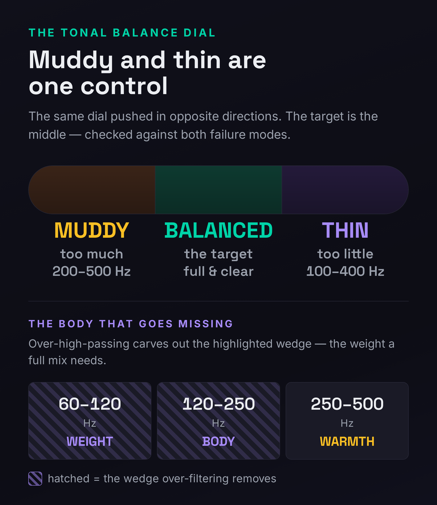
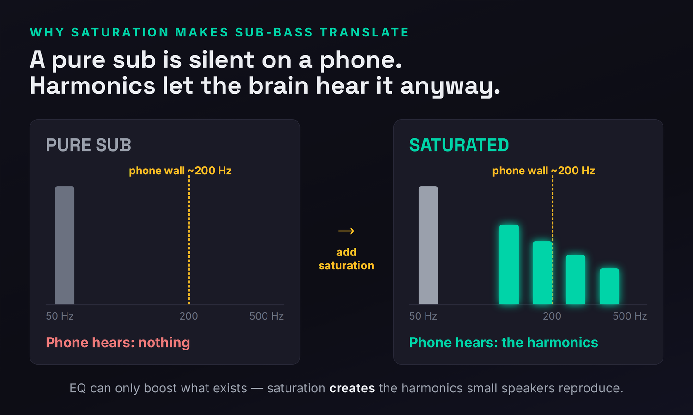
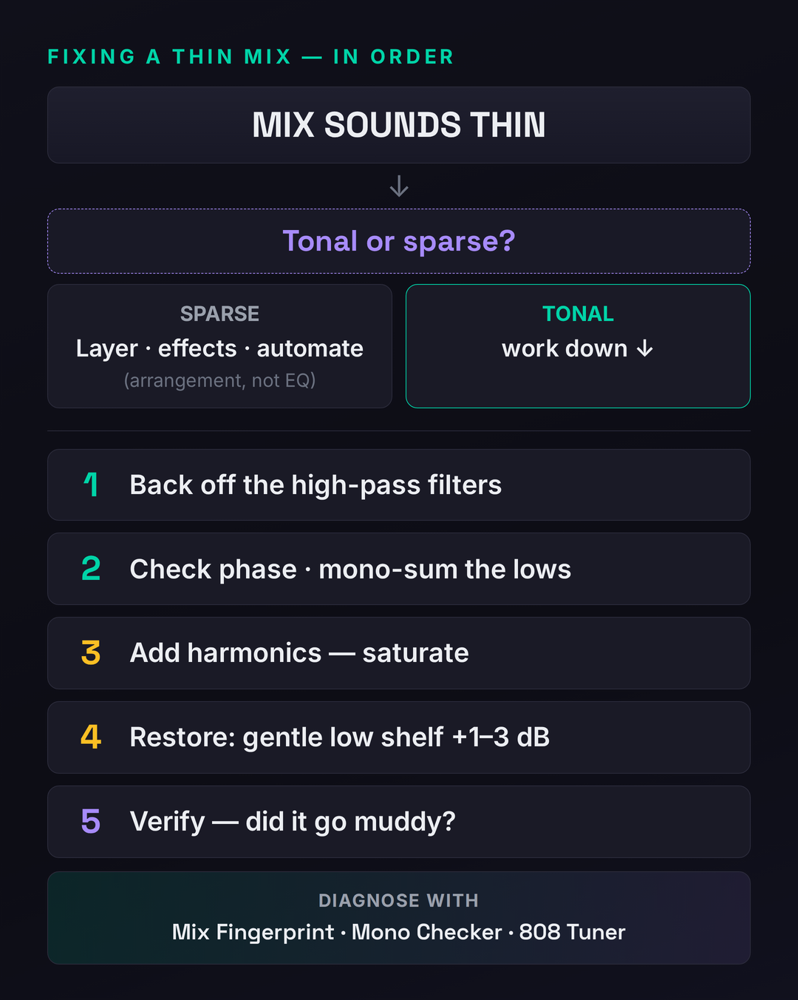

You finish the mix, play it next to a track you love, and the gap is instant: yours sounds small. Weak. Like the band is playing in the next room, or the song was recorded through a phone. It has no weight on big speakers and no warmth on small ones — it just sits there, brittle and unconvincing, while the reference feels like it’s pushing air. That hollowed-out quality has a name, thin, and like its opposite it is a diagnosable frequency problem, not a talent problem. This page is a diagnostic: we’ll find out exactly why your low end vanished, name the handful of habits that cause it, and give you the precise move that puts the body back — without re-introducing the mud you were probably trying to clean up in the first place.
Here is the mechanism in one sentence, because it reframes everything below: most thin mixes are over-corrected muddy mixes. A producer reads “high-pass everything to clean up the low-mids,” takes the advice too far, and strips out the 100–400 Hz body that gives music its weight. Thinness is the third point on the same tonal-balance dial as mud: muddy is too much low-mid, thin is too little, and the cure for one, applied with too heavy a hand, becomes the other. That’s why this page is the sibling of our guide to why a mix sounds muddy — they’re two ends of one decision, and the goal is to land in between. Once you see thin and muddy as the same dial pushed in opposite directions, the fixes stop being a grab-bag of tips and become a single discipline: find where the body went, and put back exactly that much — no more.
A mix usually sounds thin because the low and low-mid body (roughly 100–400 Hz) is missing — most often from over-aggressive high-passing, sometimes from phase cancellation eating the low end, or from clean digital sources that never had harmonic warmth to begin with. But first decide which thin you have: is the body missing (a tonal/EQ problem you fix with filters, saturation, and a gentle low shelf) or is the arrangement empty (a sparse-thin problem no EQ can solve)? Diagnose that one fork before you touch a plugin — the two paths point in completely different directions.
The 30-Second Diagnosis: Find Out What’s Missing
Before you reach for a plugin, prove that the mix is actually thin rather than just different, and you can do it in under a minute. Reference at matched loudness. Pull up a commercially released track in your genre, level-match it to yours by ear (a thin mix often reads as quiet, so without matching levels you’ll fool yourself), and A/B a dense section — a full chorus, not an intro. The question is narrow: does yours feel hollow, small, or brittle next to the reference? Where the pro track has chest and weight and yours has air and edge, that gap is your missing body, and it points straight at the band you need to restore.
Then run the small-speaker test, because thin mixes fail in a telling way. A genuinely thin mix has no warmth on a phone or laptop and no real low end on a big system — it’s starved at both ends of the playback spectrum, not just one. (Contrast that with a mix that’s merely sub-heavy, which booms on big speakers and disappears on small ones; that’s a translation problem, not a thinness problem, and we’ll get to it.) If your mix sounds underfed everywhere, you have tonal thinness. If it sounds full on your monitors but vanishes on a phone, you may instead have a harmonics/translation issue — same family, different fix.
Finally, audit your high-pass filters, because this is the single most common cause and the fastest thing to check. Open every channel and ask two questions: how many tracks have a high-pass on them, and how high is each one set? If the answer is “almost all of them” and “higher than I remember,” you’ve found the likely culprit before you’ve touched an EQ. The reflex to filter everything is taught as gospel for cleaning up mud, and applied without restraint it is exactly how a mix turns thin. A free spectrum analyzer makes the deficit visible: a healthy full-range mix slopes gently down from a confident low end, while a thin one shows a scooped, sagging bottom with a notch where the 100–300 Hz body should be. For a fuller primer on what each region does, our guide to the frequency spectrum walks through the whole range.
Drop the full mix into the Mix Fingerprint Analyzer for an objective second opinion: it reads your tonal balance against genre-calibrated targets and flags the band where your mix departs from a clean reference, so you find out whether the low end is genuinely thin or whether your room or headphones were lying to you. If the low end has any stereo width, run it through the Stereo Field & Mono Checker to catch phase cancellation, and if you’re working with sub-bass, the 808 Sub-Bass Tuner shows whether your low note is in tune and translating. The audio never leaves your browser — you just get the read.
Tonal or Sparse? The Two Things “Thin” Actually Means
“Thin” gets used for two completely different problems, and confusing them wastes hours, because the fix for one does nothing for the other. Before you EQ anything, decide which you have — this is the most important fork on the page.
Tonal thinness is a frequency problem: the mix lacks low and low-mid energy, the body that makes it feel full. This is the common one, and everything about filters, phase, saturation, and the low shelf below addresses it. Sparse thinness is an arrangement problem: there simply aren’t enough elements, or too much empty space, so the mix sounds thin no matter how it’s EQ’d. A solo voice and a single guitar will sound thin not because the frequencies are wrong but because the song is bare. No EQ, no saturation, no low shelf fixes that — the cure is layering, effects, and automation, which we cover in its own section. The tell is simple: solo-mute everything but the core parts and listen. If the few elements present are individually full but the whole feels empty, it’s sparse. If every element already sounds thin on its own, it’s tonal.

There’s a third case worth naming because it confuses people: a mix can read as thin and harsh at the same time. When you scoop out the low-mid body and the top end is left untouched (or hyped), the balance tips so far toward the highs that the mix sounds both underfed down low and brittle up top. People hear the brittleness and chase it with high-frequency cuts, which doesn’t help, because the real problem is the missing bottom that the highs are now unbalanced against. Restore the body and the “harshness” often softens on its own, because the spectrum is back in proportion. If genuine edge remains after the body is back, that’s a separate top-end problem with its own treatment — but fix the foundation first and judge the top against a mix that’s whole.
The Causes of a Thin Mix — and the Exact Fix for Each
Tonal thinness isn’t one thing; it’s a small set of habits that each rob the low end of weight. Here are the ones that account for almost every thin mix, each with the move that puts the body back. Most thin mixes are guilty of two or three at once — usually over-filtering plus a clean source that never had warmth to lose.
1. Over-aggressive high-passing (the number-one cause)
This is the single most common reason a mix turns thin, and it’s an over-correction every time. Somewhere a producer learned to high-pass to clean up the low-mids, internalized it as “filter everything,” and now reflexively slaps a high-pass on every track set higher than it needs to be. Each filter individually seems harmless — but as you stack them, two things happen. First, you strip the fundamentals and low-mid body off instrument after instrument until the mix has been collectively gutted of the 100–400 Hz weight that makes it feel full. Second, the phase rotation each high-pass introduces lands right where the fundamentals, harmonics, and formants of the music live, and those phase shifts compound as you add filters — so instead of getting bigger as you build the mix up, it gets smaller and hollower. The fix is restraint: high-pass by ear, in the full mix, only where the track needs it, and lower than you think. Raise the filter until the element just starts to lose body, then back off. Leave the fundamentals in. Many tracks that get a reflexive high-pass at 120 Hz are perfectly clean at 60–80 Hz and keep their warmth there. Not every track needs a filter at all. Our mixing EQ guide covers the discipline in depth, and it gets its own deep-dive below because it’s the highest-leverage fix on this list.
2. Phase cancellation eating the low end
The low end is the most fragile part of the mix because it’s the part most easily destroyed by phase. When two elements carry energy in the same low region slightly out of alignment — a kick and bass that disagree, a multi-miked source, layered low parts, or a stereo-widened bass — the overlapping waves partially cancel, and the energy that should be weight just isn’t there. Worse, this is invisible until you collapse to mono: stereo playback can hide the cancellation, then a phone or club system sums to mono and the bottom falls out entirely. The fix is to treat the low end as a mono signal. Check correlation, mono-sum the mix and listen for the low end disappearing, and align the offenders — nudge timing, flip polarity on a part that’s fighting, and collapse everything below roughly 120 Hz to mono so the bass can’t cancel itself. Our guide to mixing in mono explains why this habit catches problems nothing else will, and mid-side processing is the tool that lets you mono the lows while keeping width up top.
3. Clean digital sources with no harmonic content
A pure synth sub, a sampled 808, a DI’d bass, a sterile virtual instrument — these can be perfectly full of low-frequency energy and still sound thin, because they lack the harmonics that the ear reads as warmth and that let low end translate to small speakers. A sine sub has energy at one frequency and nothing above it; on anything but a subwoofer it’s nearly silent. The fix is saturation — tape, tube, or any harmonic generator — which manufactures upper harmonics the source never had. This is a genuine creation, not a boost: an EQ can only amplify frequencies that already exist, so you cannot EQ a sub into translating; saturation adds new harmonic content up where small speakers actually reproduce sound. It’s the key move for body on clean sources and the entire translation strategy for sub-bass, and it gets its own section below. See how to use saturation and the primer on what saturation is for the mechanics.
4. Frequency masking hiding warmth that’s already there
Sometimes the body isn’t missing — it’s buried. A bright, dense element sitting on top of the low-mids can mask the warmth underneath, so the mix reads as thin even though the energy is present in the file. The instinct is to boost the low end, which just piles up more energy fighting for the same masked space and walks you straight toward mud. The better fix is unmask before you boost: find the element that’s covering the body, carve a little space in it, or rebalance levels so the warmth can be heard. Restoring something that’s already there beats adding more of it — and it’s why diagnosing before reaching for a boost matters so much on the thin/muddy dial.
5. Poor gain staging and a bodiless signal path
A mix that runs too quiet into its processing can feel underfed in a way that has nothing to do with EQ. Many analog-modeled plugins generate their pleasing low-mid harmonics only when they’re driven at a healthy level; starve them and you lose the very warmth they exist to add. Run levels so low that nothing engages, and the mix stays clinically clean and lifeless. The fix is upstream: set healthy gain staging (sensible levels into each plugin, peaks with comfortable headroom on the master) so your saturators, consoles, and tape emulations actually do their work, and so the mix has the harmonic richness those tools were chosen to provide.
6. The room and monitors are lying to you
This is the sneakiest cause, because it’s a perception problem masquerading as a mix problem. If your room has a bass buildup, or your headphones are hyped in the low end, you’ll under-mix the lows to compensate — cutting body to make your monitors sound balanced — and the result is thin everywhere your monitoring isn’t. No EQ move fixes a flawed reference; you’ll just keep mixing toward the same wrong target. The fix is to stop trusting one source: check in mono, check on multiple systems (phone, car, earbuds), reference constantly, and treat the room if you can. Our comparison of mixing on headphones versus studio monitors covers how each one distorts your read of the low end and how to triangulate around it.
7. A sparse arrangement no EQ can fix
If you’ve checked the filters, the phase, and the harmonics and the mix is still thin, the problem may not be frequency at all — it may be that there’s not enough music. A bare arrangement reads as thin because the spectrum is genuinely empty in places, and you can’t EQ in energy that was never played. The fix lives in the arrangement: layer, fill, and automate — double a part, add a sustaining pad or a low harmony to occupy the body region, use reverb and delay to fill the gaps, and automate energy so sparse sections feel intentional rather than underfed. This is the opposite of an EQ fix, and it’s covered in its own section because sparse-thin and tonal-thin are different animals.
High-Pass Discipline: When Not to Filter
Because over-filtering is the number-one cause of thinness, it earns the deepest look. The high-pass filter is a genuinely useful tool — it removes rumble, tames proximity boom, and carves space so the bass and kick own the bottom. The problem is never the filter; it’s the reflex to apply it everywhere, set too high, without listening. Here’s how to keep the cleanup without the casualty.
First, filter in the full mix, never in solo. A track soloed will almost always sound “better” with the lows rolled off — cleaner, tighter, more hi-fi — which tempts you to push the filter up. But that low-end body you’re removing might be exactly what the element contributes to the sum. Set the filter while the whole mix plays, raise it until the element starts to thin or lose presence in context, then back it off until the body returns. The right cutoff is the one that cleans up clutter without touching the fundamentals the track is there to provide.
Slope matters as much as cutoff, and it’s the control people forget. A gentle 6 or 12 dB-per-octave filter rolls the low end off softly, preserving more of the body just above the cutoff and introducing less phase rotation; a steep 24 or 48 dB-per-octave filter cuts hard and clean but removes more body and bends phase more aggressively right where the fundamentals live. The reflex toward steep “surgical” filters is part of why heavily-filtered mixes turn thin and hollow: you’re not just cutting higher, you’re cutting harder. For most tonal elements a gentler slope set a little lower preserves warmth far better than a steep slope set high, and it keeps the cumulative phase smear — the thing that makes a mix shrink instead of grow as you stack tracks — under control. Reach for steep filters only when you genuinely need a hard wall, such as carving sub-rumble off a kick; everywhere else, gentle and low is the body-preserving default.
Second, filter below the lowest note the element actually uses, not at a habitual number. A bass-heavy synth might genuinely need nothing below 40 Hz; a vocal often sits comfortably down to 80–100 Hz; an acoustic guitar carrying body in a sparse arrangement may want everything above 60 Hz left intact. The blanket “everything at 120” is what guts a mix. And third, leave the kick and bass alone except for a gentle sub-rumble trim — they are the low end, and high-passing them is how you remove the one thing the mix can least afford to lose. Restraint here recovers more body than any boost, because the fastest way to add weight to an over-filtered mix is to stop removing it.
Saturation for Body: The 808 Translation Move
If your sources are clean — sampled drums, soft-synth bass, DI’d instruments — saturation is the most important body tool you have, and the science behind it is worth understanding because it makes the move obvious. Small speakers physically cannot reproduce deep bass: most smartphone and laptop speakers roll off sharply below about 200 Hz and have essentially nothing left by 100 Hz. A pure sub-bass note — a sine 808, a clean sub — lives entirely below that wall, so on a phone it’s simply gone. Since most listening happens on exactly those small speakers, a mix whose low end exists only in the sub region will sound thin to most of your audience no matter how full it is on your monitors.

The fix exploits a psychoacoustic phenomenon called the missing fundamental. The brain infers a low pitch from the pattern of its upper harmonics, even when the fundamental itself is absent — which is why a male voice still sounds deep through a telephone that can’t pass anything below 300 Hz. Saturation generates those upper harmonics: drive the sub through tape, tube, or a harmonic exciter and you create a ladder of new partials in the 120–500 Hz range that small speakers can reproduce, and the listener’s brain fills in the sub they can’t physically hear. The critical distinction, and the reason people fail at this with EQ: EQ can only boost frequencies that already exist; saturation creates new ones. Boosting 150 Hz on a pure sine that has no energy there does nothing. You have to generate the harmonic content, then optionally shape it. This is the entire translation strategy for sub-bass, and it’s the move that makes a clean 808 audible on a phone — covered in full in our guide to making trap 808s and our walkthrough on mixing bass so it sits and translates.
Saturation isn’t only for sub. A light tape or console emulation across drums, bass, and even the mix bus adds the low-mid harmonic richness that clean digital sources lack, gluing the mix and lending it the analog “weight” that thin productions are missing. The touch matters: a little adds body and life, a lot adds harshness and mud — so dial it by ear against the reference. For where each flavor earns its place, see the roundups of the best saturation plugins and the best tape saturation plugins, and audition characters in the Saturation Character Reference before you commit.
Putting the Body Back: The Gentle Low Shelf
Once you’ve stopped removing body (filters) and started generating it (saturation), a small corrective EQ move restores what’s left missing. The tool is a gentle, wide-Q low shelf: a boost of just 1–3 dB centred around 100–200 Hz with a broad, musical bandwidth. Wide and small is the whole point — a narrow boost creates a resonant bump that reads as a one-note thump, while a broad shelf lifts the entire body region evenly and naturally, the way a full mix actually sits. Apply it where the body genuinely went: on an over-filtered vocal, a bass that lost its punch, a kick that’s all click and no weight, or across the mix bus as a final touch of warmth.
Two cautions keep this from re-creating the problem you started with. First, boost less than feels right and reference constantly — thin ears overcompensate, and it’s easy to push past balanced and land back in mud. Second, know the three body bands so you target precisely: roughly 60–120 Hz is weight and sub (the felt low end), 120–250 Hz is low-end body (the fullness of bass and low instruments), and 250–500 Hz is warmth (the band you most likely over-cut chasing mud, and the first place fullness returns). This is the exact band the muddy-mix fix tells you to cut — which is precisely why the two articles are one decision. The muddy mix has too much 250–500 Hz; the thin mix has too little. Your job is to find the amount that’s right for your genre and land there, checking against a reference so you don’t overshoot in either direction.
When It’s the Arrangement, Not the EQ
If the diagnosis came back “sparse,” put the EQ down — you cannot equalize energy that was never recorded. A thin arrangement needs more music, and the cures are compositional and effect-based rather than corrective. The most direct move is layering: double a part, add a sustaining pad or low harmony to occupy the body region the lead leaves empty, or reinforce a thin section with a complementary element so the spectrum fills out. A single guitar and voice will read thin not because of frequencies but because the song is bare; a tasteful pad under the chorus or a low octave on the bass can change the whole sense of weight.
Effects fill space that instruments don’t. Reverb and delay extend sounds across time so the gaps between notes aren’t silent, and creating depth in a mix with deliberate ambience makes a sparse arrangement feel intentional and full rather than empty. Parallel processing — parallel compression, parallel saturation — lets you add density and sustain to a part without crushing its dynamics, thickening the body of drums or bass while keeping the transients alive. And automation turns sparseness into a feature: ride energy up into the chorus and pull it back in the verse so the quiet sections read as restraint rather than thinness. The broader craft of building an arrangement that supports the mix lives in our guide to arranging a song — because the most common “mix” problem of all is a mix asked to rescue an arrangement that isn’t finished.
What to Fix First: The Order of Operations
Thinness has a natural repair order, and following it keeps you from chasing your tail or overshooting into mud. Work top to bottom; most thin mixes are healed by the time you’re halfway down.

Start by fixing your monitoring and referencing at matched loudness — there’s no point correcting a mix against a lying room, and the reference tells you how much body is normal for your genre. Then diagnose tonal versus sparse; if it’s sparse, go to the arrangement and stop here. If it’s tonal, audit and back off your high-pass filters first, because that recovers the most body for the least effort and reverses the most common cause directly. Next, check phase and mono-sum to make sure the low end isn’t cancelling itself. Then, where sources are clean, add harmonics with saturation for body and translation. Then, and only then, restore what’s left missing with a gentle wide low shelf. Finally — and this is the step that closes the loop — verify you didn’t overshoot into mud. Sweep the low-mids, A/B the reference one more time, and confirm the mix is full but still clear. Thin and muddy are the two ways to miss; the target is the balance between them, and the only way to know you’ve hit it is to check against the failure mode you were trying to avoid.
Diagnose Your Mix, Not a Generic One
Every mix is thin in its own way, and the fastest path to the right fix is measuring yours rather than applying a recipe. Drop the full mix into the Mix Fingerprint Analyzer for a complete read on your tonal balance against genre-calibrated targets — it flags the exact band and section where your mix departs from a clean reference, so you find out whether the low end is genuinely starved or whether your room talked you into cutting it. If the bottom has any width, the Stereo Field & Mono Checker exposes the phase cancellation that quietly eats low end, and the 808 Sub-Bass Tuner confirms your sub is in tune and translating before you spend an hour saturating a note that was flat the whole time. For the precise frequencies behind every move on this page, keep the Frequency & EQ Reference open as you work. The audio never leaves your browser — you just get the diagnosis, then the fix.
Before You Touch the EQ: 3 Drills
Run these in order. Each one trains the listening skill that lets you fix thinness by ear instead of by recipe — and, just as importantly, keeps you from overshooting back into mud.
- Open every channel in a mix you think sounds thin and list which tracks have a high-pass filter and where each is set.
- One by one, in the full mix, lower each filter (or bypass it) and listen for body returning — stop where clutter starts to creep back.
- Bypass all your changes at once and toggle. If the “before” sounds noticeably smaller, you just located your thinness: it was the filters all along.
- Take a pure sine 808 or sub and play it through your phone speaker — confirm it’s nearly silent there.
- Add saturation (tape, tube, or a harmonic generator) and dial it up until the note becomes audible on the phone, watching the harmonics appear above 120 Hz on an analyzer.
- A/B with and without on both phone and monitors. The goal is a note you can hear everywhere — proof that harmonics, not EQ boosts, are what make sub-bass translate.
- On an over-filtered mix, back off the filters, add light saturation where sources are clean, then place a gentle wide low shelf of +1–3 dB around 100–200 Hz.
- Reference a commercial track at matched loudness and adjust until the body matches — resist pushing past it.
- Sweep the low-mids and mono-check. If the mix is now full and still clear, you’ve hit the balance between thin and muddy — the only target that counts.
Frequently Asked Questions
Usually one of two things. Either the bass is there but phase-cancelling — two low elements slightly out of alignment partially cancel, so the energy reads as weak; mono-sum the mix and the bass will often disappear, confirming it. Or the bass is pure sub with no harmonics, so it’s full on your monitors but inaudible on small speakers, making the overall mix feel thin to most listeners. Check phase first, then add saturation for harmonics if the low note is clean and sub-only.
High-passing is good; high-passing everything reflexively and too high is what makes mixes thin. The cleanup is real, but each filter strips low-mid body and adds phase rotation that compounds across tracks. Filter only where a track needs it, set just below the lowest note that element actually uses, judge it in the full mix rather than solo, and leave the kick and bass alone. Restraint keeps the cleanup without gutting the weight.
Use a gentle, wide low shelf — +1 to 3 dB around 100–200 Hz with a broad Q — rather than a narrow boost, and add it only where the body genuinely went. Generate warmth with saturation instead of stacking EQ boosts, since saturation adds harmonic richness without piling energy into one band. Then reference a commercial track at matched loudness and stop the moment the body matches. Thin and muddy are the two ways to miss; the target is between them, so check against the muddy side as you go.
Because phone and laptop speakers physically can’t reproduce deep bass — most roll off below about 200 Hz and have nothing left by 100 Hz — and a pure sub lives entirely below that wall. The fix isn’t an EQ boost (you can’t boost energy that isn’t there); it’s saturation, which generates upper harmonics in the range small speakers can reproduce. The brain reconstructs the missing fundamental from those harmonics, so the listener “hears” the sub even on a speaker that moves no real low air.
Solo-mute down to the core elements and listen. If the few parts present each sound full on their own but the whole feels empty, it’s sparse — an arrangement problem that layering, effects, and automation fix, not EQ. If every element already sounds thin individually, it’s tonal — a frequency problem you address with filters, saturation, and a low shelf. Diagnosing this fork first saves you from EQ’ing a mix that simply needs more music, or from re-arranging one that just needs its body restored.
Your monitoring is flattering the low end. If your room has a bass buildup or your headphones are hyped down low, you under-mix the lows to compensate — cutting body to make your own setup sound balanced — so the mix is thin everywhere your monitoring isn’t. No EQ fixes a bad reference. Check in mono, check on a phone and in a car, reference commercial tracks constantly, and treat the room if you can. The goal is a read you can trust, not a mix that only works in one chair.
Not exactly — it adds harmonics that make existing low end perceptible and richer, which the ear reads as more body and weight. Saturation generates new partials above the fundamental, and the brain uses that harmonic pattern to perceive the low pitch (the missing-fundamental effect), so a saturated bass sounds fuller and translates to small speakers that can’t reproduce the sub. It also adds low-mid harmonic warmth that clean digital sources lack. It doesn’t create sub energy from nothing, but it makes the low end you have read as much bigger.
You over-corrected — the classic reason mixes turn thin. The moves that clear mud (high-passing, cutting 250–500 Hz) remove body as well as congestion, and pushed too far they strip the warmth the mix needs to feel full. Back off the filters a little, make your low-mid cuts smaller and on fewer tracks, and restore a touch of body with a gentle low shelf. Mud and thin are the same dial in opposite directions; if cleaning up mud landed you in thin, you went past the balanced middle — ease back toward it and reference as you go.